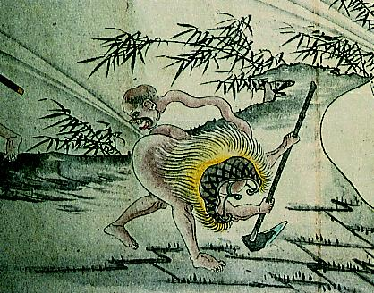

首の長い化け物。身をかがめて放屁している。長く伸びた首は反り返り、顔が後方を向いている。頭部は男性で、口を大きく開いて舌を出し、睨み付けているようである。蓑を着て鍬を持っていることから、男は百姓なのだろうか。
出典：親書誌：A5_hermitage_0008：放屁合戦図巻；ホウヒカッセンエマキ／日付：2011／資源識別子：A5_hermitage_0008_0002_0000
Copyright (c)2010- International Research Center for Japanese Studies, Kyoto, Japan. All rights reserved.